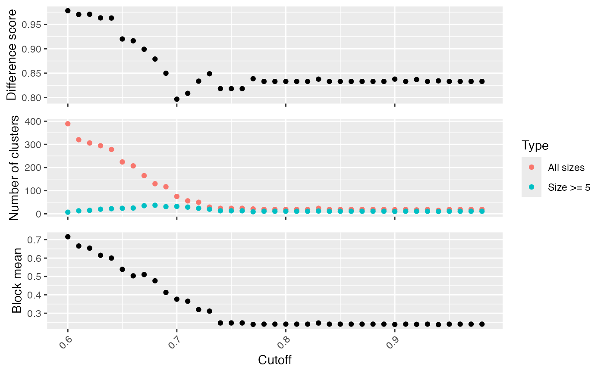

Select the cutoff for binary cut
Usage
select_cutoff(
mat,
cutoff = seq(0.6, 0.98, by = 0.01),
verbose = se_opt$verbose,
...
)Arguments
- mat
A similarity matrix.
- cutoff
A list of cutoffs to test. Note the range of the cutoff values should be inside
[0.5, 1].- verbose
Whether to print messages.
- ...
Pass to
binary_cut().
Details
Binary cut is applied to each cutoff and the clustering results are evaluated by following metrics:
difference score, calculated by
difference_score().number of clusters.
block mean, which is the mean similarity in the blocks in the diagonal of the heatmap.
Examples
# \donttest{
mat = readRDS(system.file("extdata", "random_GO_BP_sim_mat.rds",
package = "simplifyEnrichment"))
select_cutoff(mat)
#> 1/39, cutoff = 0.6...
#> 2/39, cutoff = 0.61...
#> 3/39, cutoff = 0.62...
#> 4/39, cutoff = 0.63...
#> 5/39, cutoff = 0.64...
#> 6/39, cutoff = 0.65...
#> 7/39, cutoff = 0.66...
#> 8/39, cutoff = 0.67...
#> 9/39, cutoff = 0.68...
#> 10/39, cutoff = 0.69...
#> 11/39, cutoff = 0.7...
#> 12/39, cutoff = 0.71...
#> 13/39, cutoff = 0.72...
#> 14/39, cutoff = 0.73...
#> 15/39, cutoff = 0.74...
#> 16/39, cutoff = 0.75...
#> 17/39, cutoff = 0.76...
#> 18/39, cutoff = 0.77...
#> 19/39, cutoff = 0.78...
#> 20/39, cutoff = 0.79...
#> 21/39, cutoff = 0.8...
#> 22/39, cutoff = 0.81...
#> 23/39, cutoff = 0.82...
#> 24/39, cutoff = 0.83...
#> 25/39, cutoff = 0.84...
#> 26/39, cutoff = 0.85...
#> 27/39, cutoff = 0.86...
#> 28/39, cutoff = 0.87...
#> 29/39, cutoff = 0.88...
#> 30/39, cutoff = 0.89...
#> 31/39, cutoff = 0.9...
#> 32/39, cutoff = 0.91...
#> 33/39, cutoff = 0.92...
#> 34/39, cutoff = 0.93...
#> 35/39, cutoff = 0.94...
#> 36/39, cutoff = 0.95...
#> 37/39, cutoff = 0.96...
#> 38/39, cutoff = 0.97...
#> 39/39, cutoff = 0.98...

# }